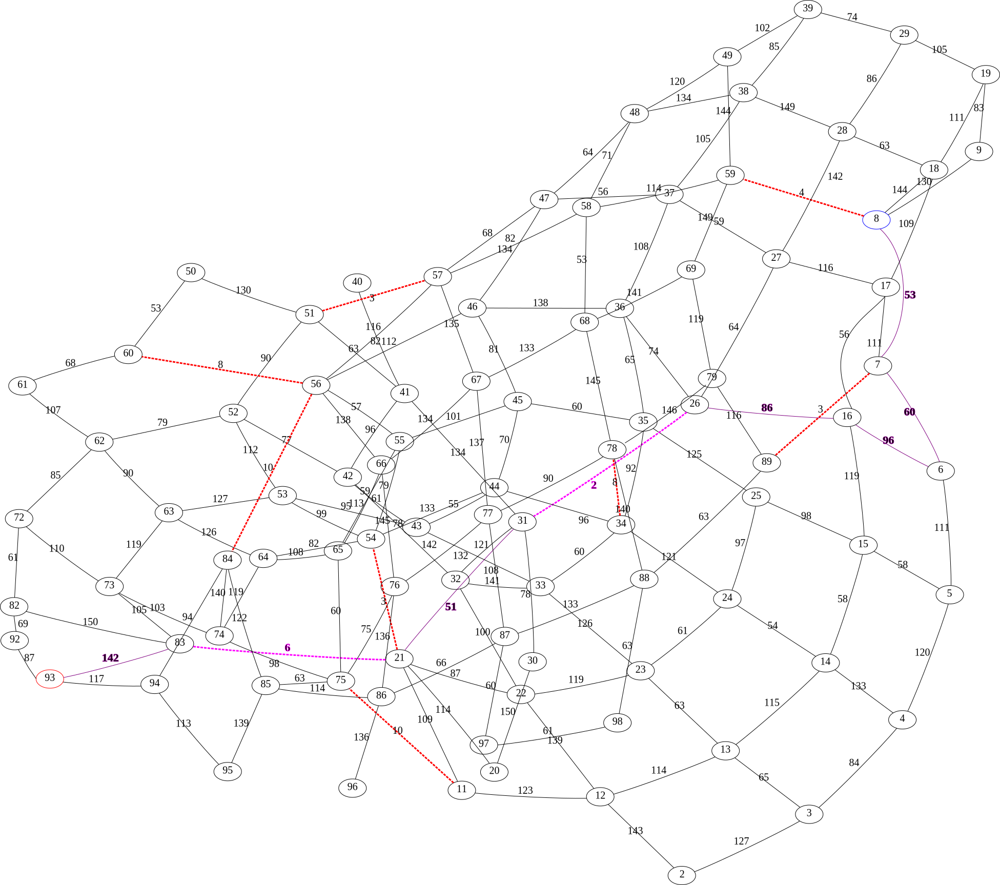

| H - Travel Planning |
You want to go from one city to another. For this, you can use a combination of trains and planes. Some pairs of cities are connected directly by train and others by plane, while others are not connected at all. No pair of cities has both a train and a plane line connecting them. Planes are usually much faster than trains, but you can only take a limited number of them. To arrive as fast as possible, you are going to write a program to plan the fastest route.
For example, in the following map cities are connected by trains represented by black lines and planes represented by red dashed lines. Each route is labelled with its duration. The fastest travel plan for going from city 8 to city 93 using at most 2 planes is marked in violet:
Starting from city 8, you take four trains (53 + 60 + 96 + 86), then a plane (2), a train (51), another plane (6) and finally you take another train (142) to arrive to city 93, for a total travel duration of 496.
The input format is as follows:
An integer in a single line which says the number of problems to solve. Then, for each problem:
The number of cities (n ≤ 300) in the map, as an integer in a single line. Cities will be numbered from 0 to n-1.
Two integers in a single line separated by a space. The first is the starting city and the second is the destination city.
The maximum number of planes that you can use (p ≤ 4), as an integer in a single line.
The number of train routes, as an integer in a single line. Then, for each train a line containing three integers separated by spaces: the first two are the cities connected and the third is the time taken by the train. All routes are bidirectional.
The number of plane routes, as an integer in a single line. Then, for each plane a line containing three integers separated by spaces: the first two are the cities connected and the third is the time taken by the plane. All routes are bidirectional.
You can assume that trains and planes can be taken at any time without having to wait for them.
For each problem, a line with a single number indicating the total duration of the shortest travel plan using at most p planes. You can be sure that there is always a solution to the problem.
1 10 2 8 2 13 2 1 130 1 4 83 4 7 105 7 6 86 7 8 64 8 5 74 1 0 72 9 6 69 0 3 56 3 4 141 6 3 124 4 5 133 5 2 140 4 6 8 5 9 3 9 2 9 10 1 8 7
84